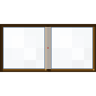
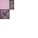
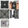
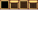
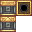
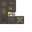

Create: Radars
附属模组
用应力驱动的雷达与自动探测
这是什么
给机械动力加一套探测系统：雷达扫描、目标锁定、信号输出，可以接进红石或 Create 的自动化。
命名空间：
create_radar 1.20.1 版本：本页物品与配方直接取自该版本的 jar。雷达设备9

创造模式雷达板create_radar:creative_radar_plate
没有工作台/机器配方

平面雷达create_radar:plane_radar
探测过滤器create_radar:radar_filter_item
雷达板create_radar:radar_plate_block
雷达接收器create_radar:radar_receiver_block
雷达安全区标定器create_radar:radar_safe_zone_designator
雷达警报接收器create_radar:radar_warning_receiver
没有工作台/机器配方
信号与显示1

显示器create_radar:monitor
其它13
反雷达制导单元create_radar:arad_guidance
没有工作台/机器配方

自动俯仰控制器create_radar:auto_pitch_controller
双筒望远镜create_radar:binoculars
识别过滤器create_radar:ident_filter_item

识别应答器create_radar:identification_transponder
雷达干扰器create_radar:jammer
没有工作台/机器配方
目标过滤器create_radar:target_filter_item
追踪控制器create_radar:track_controller
没有工作台/机器配方